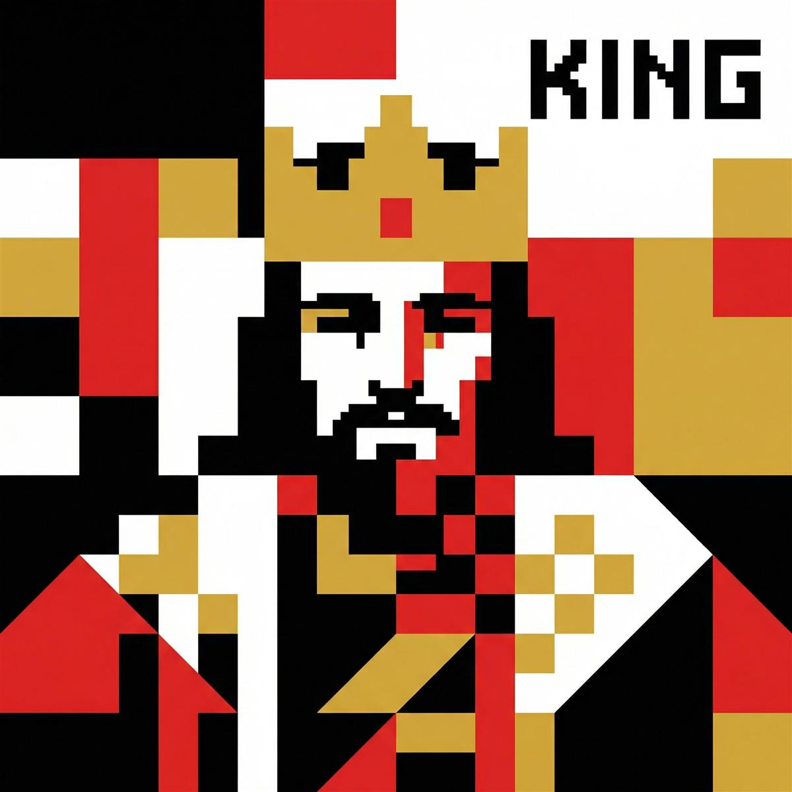
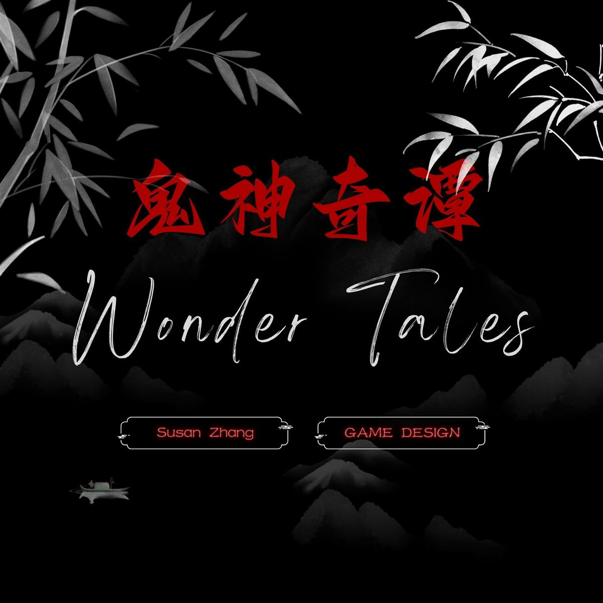
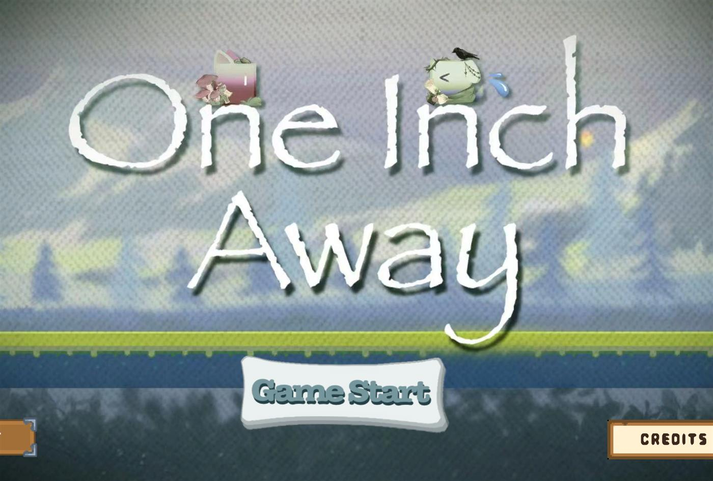
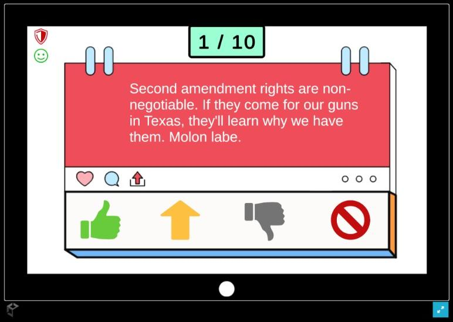
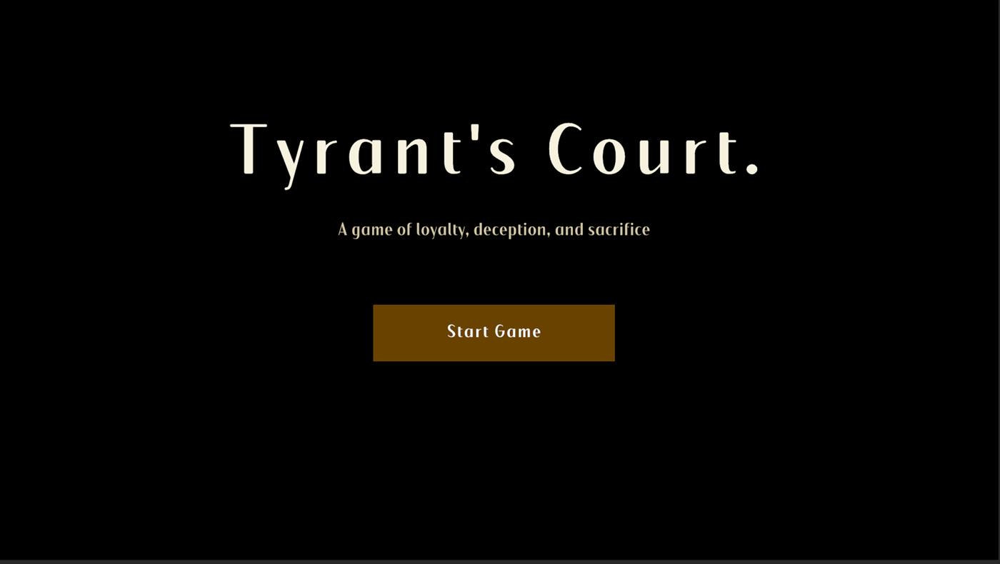
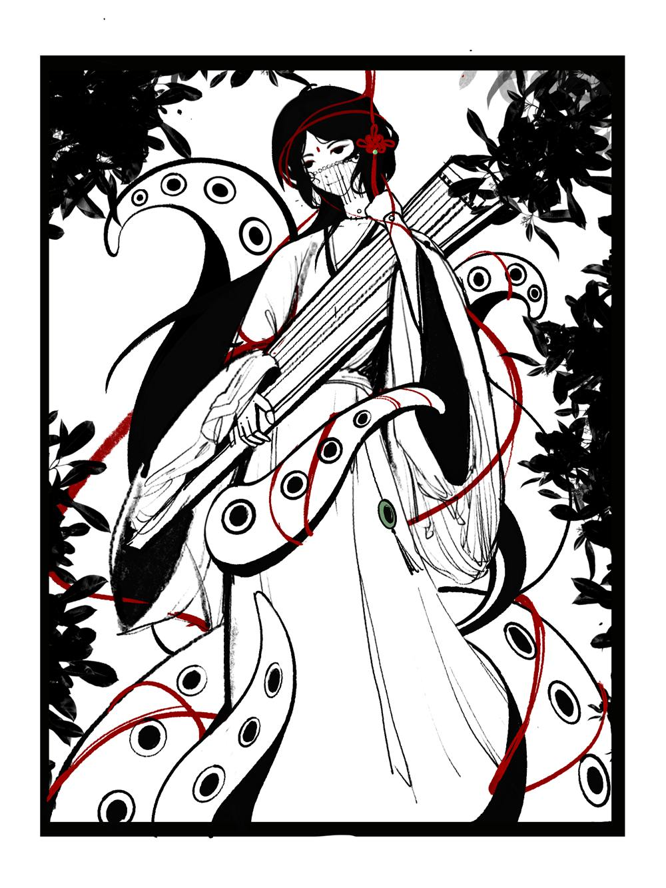
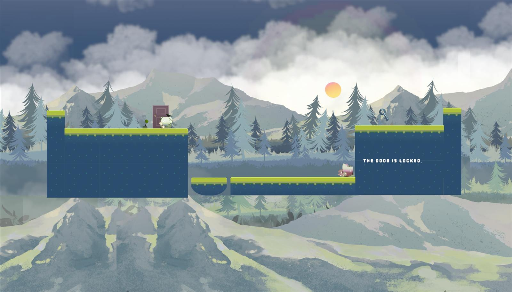
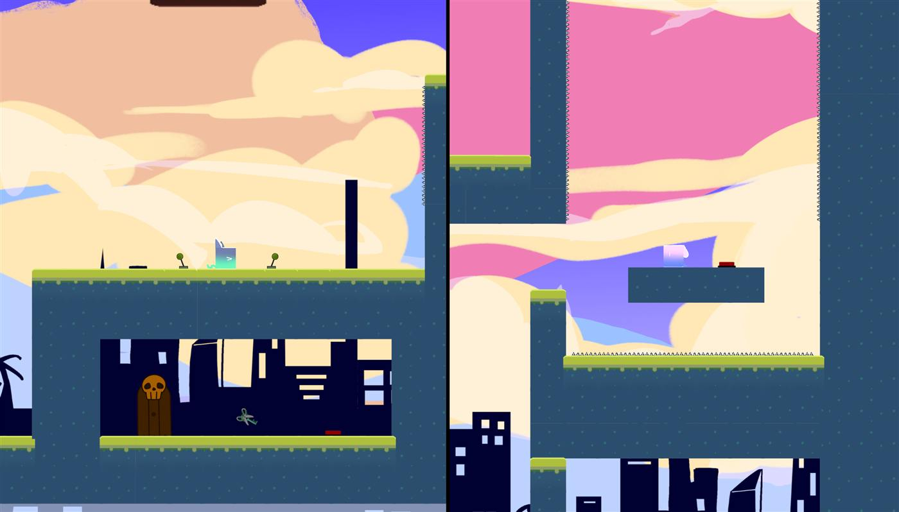
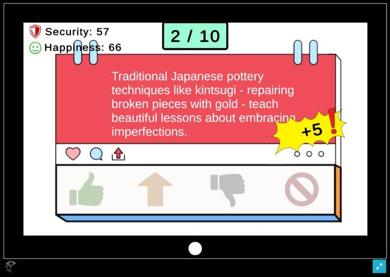

Game Design Portfolio
Systems · Narrative · Playable Prototypes
I design gameplay systems and narrative experiences, using playable prototypes and player feedback to guide iteration.
Visit Portfolio Website
crystaleech.github.io/SusanPortfolioWeb
susa525795546@gmail.com




01 · Individual / CoursePlayable prototype

A card prototype about information, exposure, and shared risk. In the current version, holding Evidence is the advantage, and that same Evidence becomes vulnerability once it is exposed.
I designed the game and its systems, then revised them from what players did in playtests.
Direct attacks crowded the earlier version. The current rules remove them. Players still affect one another because one player's Evidence changes the shared round-end punishment. The refined notes do not restate a separate win condition.
02 · IndividualIn development

Wonder Tales asks whether investigation, choices, and cards can carry Chinese folk horror. I host the paper session. No computer resolves actions or runs a build.
I independently designed the game and the facilitated paper prototype, and I ran the paper sessions.
The first session needed too much folklore explained, split attention across the group, and left self-made characters outside the story. The revision moves toward a defined outsider investigator and a tighter sequence. That is the next question, not a measured result.
03 · Group / Game JamPlayable demo


A cooperative platformer. Two magnets of the same polarity can never touch, so one player's position pushes the other through the level.
I implemented movement, magnetic repulsion, level interaction, and tuning, and I took part in the shared direction of the jam.
The push is always active, so movement is a negotiation. Standing closer increases that push and changes where the other player can land. The case study does not record a numeric force value from the tuning.
crystaleech.github.io/SusanPortfolioWeb/one-inches-away.html
04 · IndividualPlayable prototype

A moderation prototype. Each post offers four actions, and the choice moves community happiness and information safety in different directions.
I designed and built the actions, the two metrics, and the selection of which material appears. The post text is not all my original writing.
For the example “Suspicious link detected...”, Promote changes happiness by 10 and safety by −20. Limit changes happiness by −5 and safety by 15. Send and Ban are in the prototype; this example does not assign numbers to them. No playtest revision is recorded.